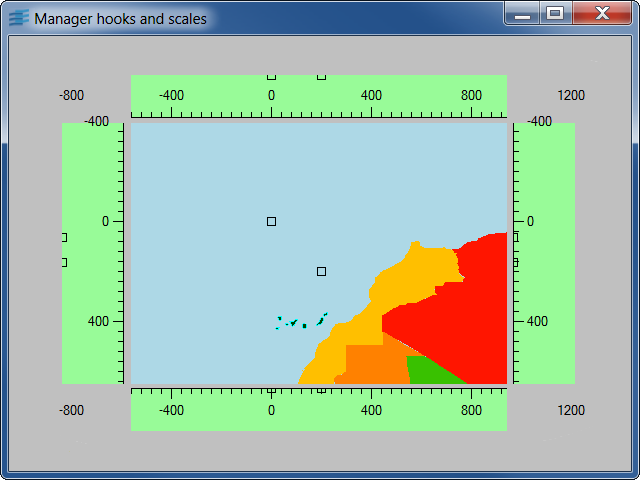
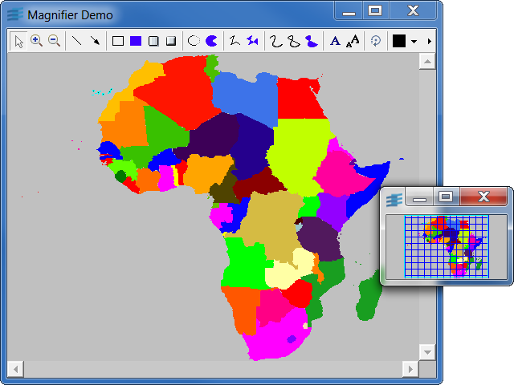

scalemgrDisplays scales around a map and synchronizes them with the transformer of the map.

Shows the connection of location scales around a map.
The usual accelerators are available to zoom and pan the map:
IlvManagerIlvManagerViewHookIlvRectangularScalemagnifyDisplays a map in a global view and a magnified view.

Illustrates a possible use of the multiview capabilities of
a manager.
Two views display the same map. The main view allows you to show
the map in detail. The small view is intended to provide
a global view of the map; it also contains a specialized
object representing the rectangular region of the map shown in
the main view. This object is called the magnifier and
is controlled by a manager view hook.
Zooming or moving in the main view changes the magnifier
position and size.
Clicking the global view moves the magnifier and
changes the area seen in the main view.
For demonstration purposes, this sample code uses portable GUI
elements from the Gadgets package of the Rogue Wave Views suite.
Feel free to use these elements in your application if you have
a license for Rogue Wave Views or for Rogue Wave Views Controls.
This information applies to the classes located in the library ilvgadgt,
listed in the README file that you can find in the installation directory.
IlvManagerIlvManagerViewHookIlvManagerMagViewInteractor